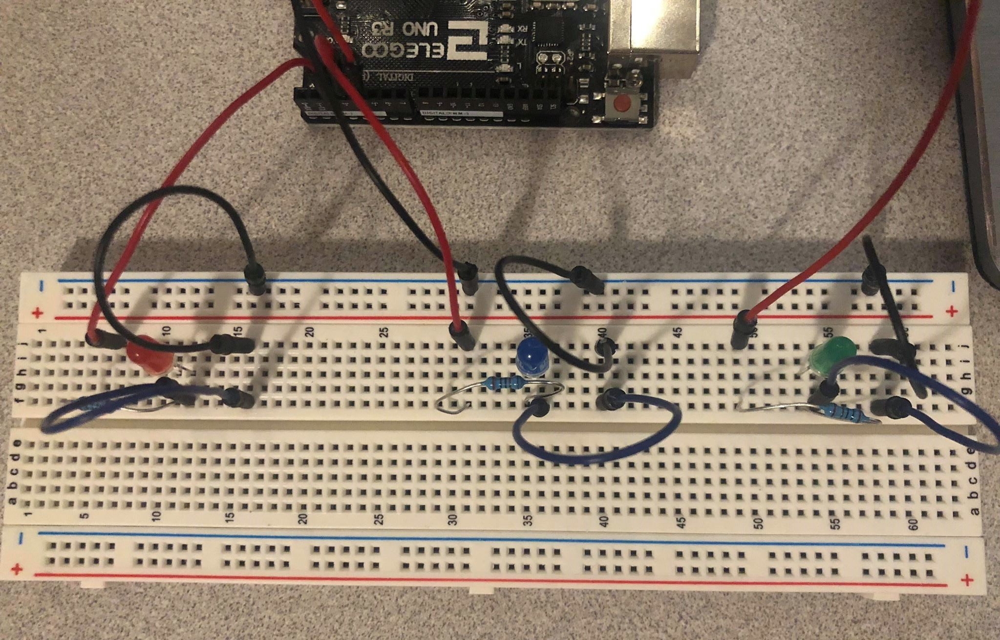
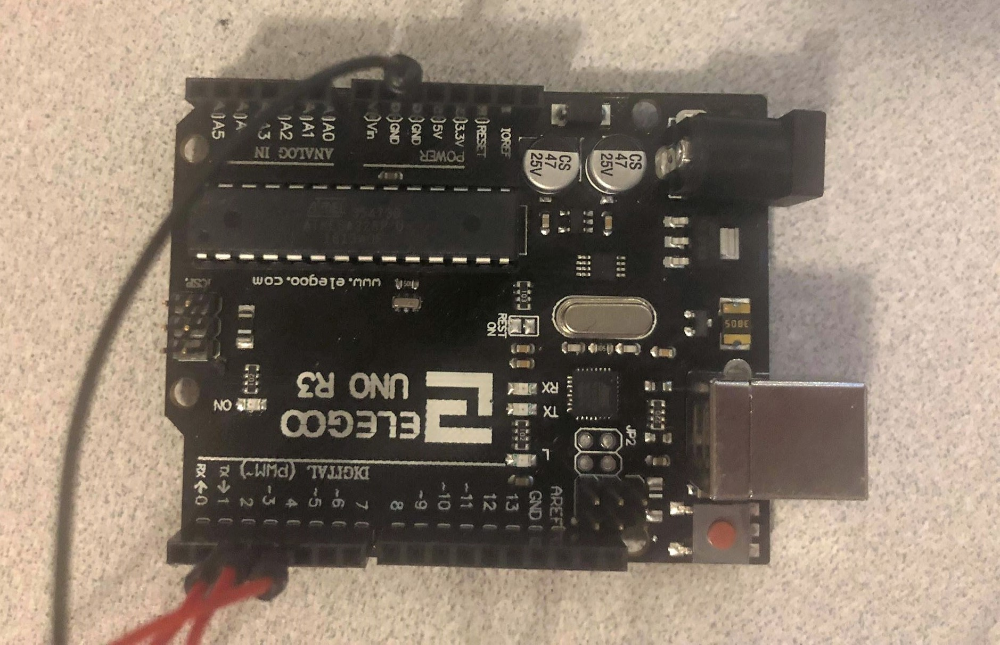
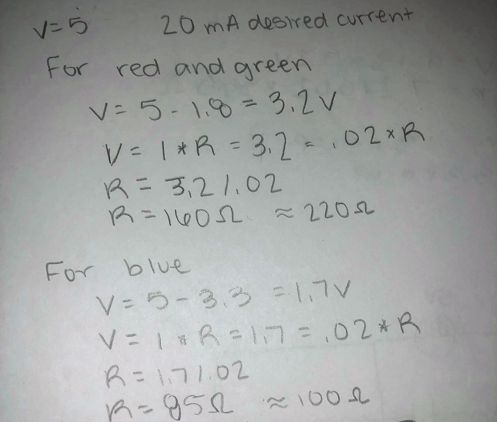
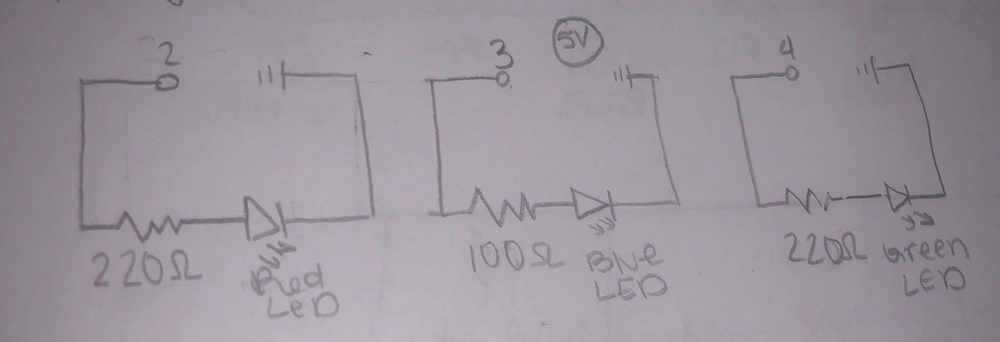
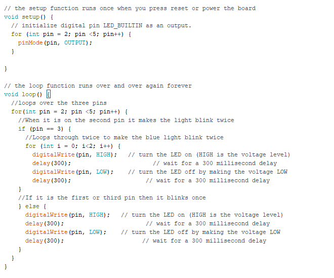

Courtney McKee's Assignment 1!
Here is all the documentation for assignment 1 which inlcudes the circuit board, schematic, a code snippet, and the circuit operation!
Circuit
 
The breadboard is on the left which is connected to the controller board on the right. There are three different leds: red, blue, and green.
The red led is connected to pin 2, the blue led is connected to pin 3, and the green led is connected to pin 4. They will be blinking at different times which can be seen in the video at the bottom of the page.
To see more information about the board layout look at the schematic.
Schematic

This shows the calculations of ohms and which resistors I used. The equation I used was ohms law which is Voltage (volts) = current (Amperes) * Resistance (ohms). Short hand it is V(V) = I(A) * R(ohms)
For the calculation I used 5V because this is the voltage coming from the controller board. I used 20mA for I because that is the desired current.
I rounded up to the closest resistors based on the calculations I got. The closest resistor for the blue led is 100 ohms and the closest for the red and green led is 220 ohms.

This is the schematic which shows which pins, leds, resistors and voltage was used on the board.
Code Snippet

This shows the code that I used to make the lights blink. There is a short description for each line.
Circuit Operation

This is the final product of the blink assignment.